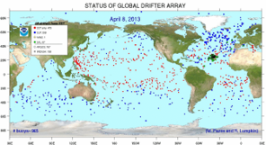
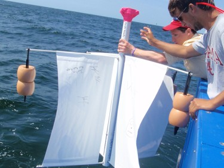
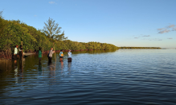

Why sparse drifter trajectories matter for ocean salinity modeling
Ocean drifters offer a valuable way to observe real marine environments, but they usually sample only sparse trajectories rather than dense spatial fields. This creates a fundamental gap between what is observed and what ocean analysis or decision-making needs.
Research motivation
Salinity is a key indicator of ocean dynamics, freshwater transport, mixing processes, and coastal environmental change.
- Global drifter observations show the scale and sparsity of the monitoring problem.
- Field deployment images highlight how in-situ observations are acquired in real ocean environments.
- Coastal scenes motivate why nearshore salinity reconstruction is practically important.



Observation challenge
Drifter measurements are informative but spatially sparse.
Environmental complexity
Nearshore waters are shaped by tides, currents and freshwater influence.
Modeling goal
Recover a dense salinity field from sparse moving trajectories.
NSF drifter observations in the Fort Pierce coastal region
This section highlights the real NSF drifter dataset, showing the deployment location and the observed drifter trajectory with salinity values in the study area.
Sea surface salinity imputation as a tensor completion problem
We formulate sea surface salinity imputation under sparse drifter trajectories as a tensor completion problem over time, latitude, longitude, and sensor variables.

OASIS: Ocean salinity imputation framework
The proposed framework includes a training stage and an inference stage, connecting sparse drifter trajectories to reconstructed salinity predictions.

Prediction examples on different trajectory segments
Example visualizations compare reconstructed salinity patterns across multiple coastal trajectory segments, highlighting the spatial consistency of predicted salinity values.